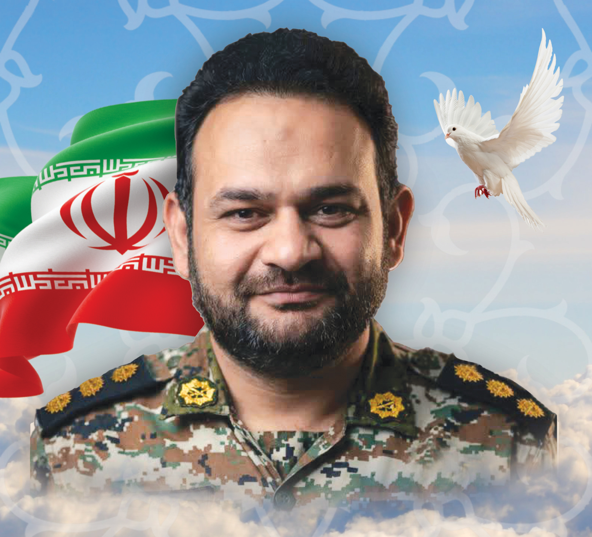
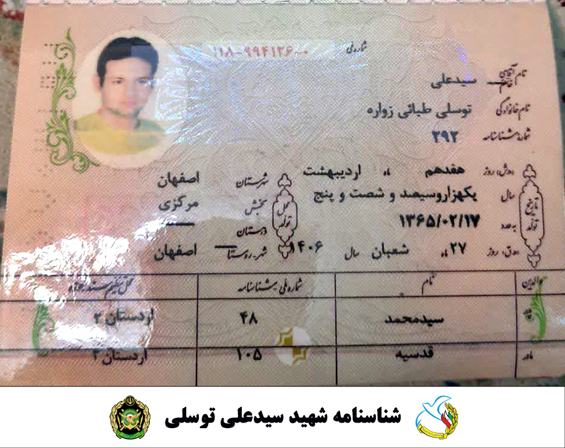
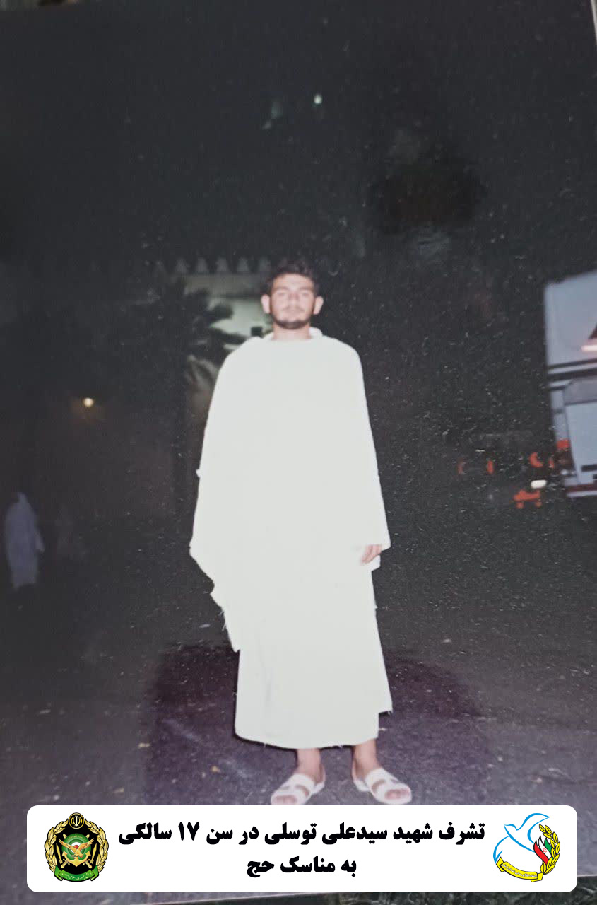

سید علی توسلی مورخ 1365/04/17 در استان اصفهان، شهرستان زواره دیده به جهان گشود. بعد از طفولیت تحصیلات را تا سطح دیپلم در زادگاهش گذراند و سال 84 در رشته مهندسی هواپیما در دانشگاه شهید ستاری نهاجا پذیرفته شد و در تخصص پدافند هوایی موشک اس200 فارقالتحصیل و مدت 5 سال در بندر عباس خدمت میکرد. سپس به تهران منتقل و مدت 12 سال در سایت پدافند حسنآباد عهده دار مسئولیت بود. اسفند سال 1388 ازدواج نمود که ثمره آن 2 فرزند ذکور به نامهای سیدهادی و سیدمهدی و یک فرزند دختر به نام ریحانه سادات می باشد.
خصوصیات اخلاقی فردی خوشاخلاق، مردمدار، وقت شناس، احترام به پدر و مادر، تعهد به انجام وظایف شرعی، علاقهمند به فراگیری مهارتهای مختلف فرزندانش، علاقه وافر به مطالعه، اهمیت به صله رحم و غیره بود.
ایشان سال 1399 موفق به اخذ کارشناسی ارشد علوم سیاسی دانشگاه علامه طبابایی گردید و سرانجام در سال 1404 به سایت پدافند حضرت معصومه (س) منتقل گردید که فروردین 1405 در حمله ددمنشانه آمریکایی صهیونی درحالیکه در دفاع از میهن و پدافند منظریه قم بود به درجه رفیع شهادت نائل آمد. روحش شاد و یادش گرامی باد.
